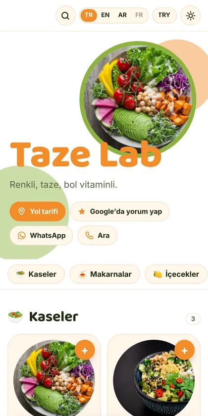

14 alerjen
Glüten, süt, yumurta, kuruyemiş ve diğerleri.
AuraMenu'de her ürüne içerik listesi ve alerjenler eklenir. Misafir ürün detayını açınca glüten, süt, yumurta, kuruyemiş gibi alerjenleri simgelerle görür. Alerjen bilgisi işletme tarafından girilir.

Glüten, süt, yumurta, kuruyemiş ve diğerleri.
Her ürünün içinde ne olduğu yazılı.
Misafir malzeme adıyla arayabilir.
Alerjen ve içerik bilgisini işletme girer ve günceller. Menüde misafiri emin değilse personele sormaya yönlendiren bir not da gösterilir.